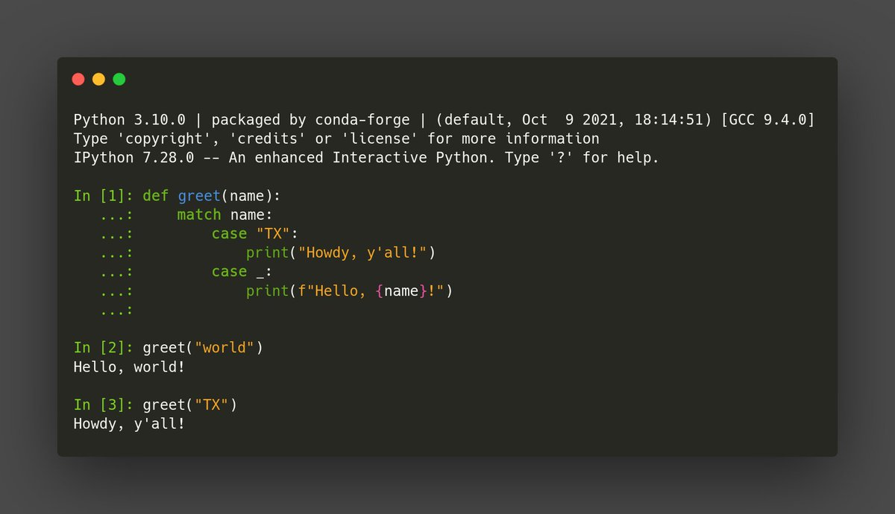

Honestly, when I see a rude interaction, I can't help myself. https://github.com/sphinx-doc/sphinx/issues/9683
Replying to @HEPfeickert
I may be naïve but... We could start by communicating frequently with each other? Arriving at an issue tracker 5 months after your problem has been released doesn't strike as effective to me.
RT @vsoch: Hey research software engineers! if you want to have some fun for this #Hacktoberfest, please open a pull request to add your mo…
RT @vboykis: The fundamental tension in data work that there are two modes: exploration, where you want to inspect the data quickly, and pr…
Replying to @PascualGil1
Las respuestas a este tuit diciendo "llevo más años que tú"... ¿por qué la gente es así? Estoy muy cansado de Ad Verecundiam
Replying to @juanluisback
Nunca habríamos llegado así de lejos de no ser por @jcea y @qkolnek incansables en @python_madrid , @kaleidosnet por darnos una sede social, Yamila y @achamorro_dev por echarse al hombro los meses cruciales de la #PyConES 2013, @cyberslas por ser el mejor tesorero de la historia,
Gracias @python_es por la distinci√≥n de Socio de Honor ‚ô•Ô∏è No me lo esperaba y me ha hecho mucha ilusi√≥n üò≠
Pienso muy a menudo en esos 6 años de presidencia y esas 7 @PyConES. Me equivoqué y lloré mucho, de alegría y de tristeza.
Hoy, @python_es está más fuerte que nunca. https://twitter.com/PyConES/status/1444713074682908678
Replying to @juanluisback
por supuesto @dukebody por recoger el testigo y subir el listón todavía más, y mucha gente que no me cabe en este hilo.
Mucho trabajo aún por hacer, más barreras que derribar, más diversidad por conseguir, más relaciones por construir. Nos vemos pronto en el mundo real üòÉ
Replying to @mariocj89
y David por organizar un evento en su tierra estando a centenares de kilómetros, @pyblogsal por su energía desbordante en todo lo que hace, @DanielDomeneL y @zuriich92 por navegar un mar de incertidumbre con un éxito abrumador,
Replying to @maidotgimenez
por aguantar lo que no está escrito como "designer in residence", @javipalanca por convencer al Maestro Horchatero de trabajar en noviembre, @olea y @CrisConRu por asombrarnos desde lo más recóndito de la península, @mabeldelgadob por movilizar con su entusiasmo,
RT @sdelquin: Eyyy! Gente de #Twitch. Esto no para. Mañana lunes 4 de octubre estaremos con @reydelhumo #alegando de muchas cosas interesan…
RT @PyConES: Mil gracias a toda la organización, a quienes habéis interactuado con nosotras por aquí y a través del hashtag #PyConES2021. E…
Volvi√≥ el mejor local de música en directo del mundo üòç https://www.facebook.com/permalink.php?story_fbid=4327566220664909&id=335324683222436
Replying to @maidotgimenez, @python_es and @PyConES
Muchas gracias Mai ❤️ ¡Espero que estés muy bien! Un abrazo fuerte
Crypto bros stealing the word "community" for their shitty scams is the most annoying thing I have seen on this website in a long time. https://twitter.com/gregisenberg/status/1442132102888280070
Replying to @MedialabPrado
¡Me interesa! ¿Hace falta registrarse para el día 13?
RT @pleiszenburg: Finally some cool and actually usable #machinelearning application: "Skilful #precipitation #nowcasting using deep #gener…
Replying to @webknjaz, @codewithanthony, @pradyunsg and @debian
"The community", probably yes. But it will be a while until everybody gets the memo I assume?
Replying to @jcea, @qkolnek, @python_madrid, @kaleidosnet, @achamorro_dev and @cyberslas
¡Muchas gracias Jesús! Un abrazo fuerte
Replying to @DanielDomeneL, @mariocj89, @pyblogsal and @zuriich92
¡Gracias figura! Un abrazaco, espero que coincidamos pronto
RT @pyblogsal: üêç Python 3.10 is finally released üéâ Thanks to everyone who followed along with the release at the release party üòÅ. We are su‚Ķ
RT @brianokken: Python 3.10 also brings:
$ python3 -m venv venv --prompt .
The dot (.) tells venv to use the current directory name for th…
Replying to @melissawm
I'm genuinely shocked. I dread WhatsApp but in Spain also like 99.9 % of the population use it. Are SMS and MMS free in the US or something? üò≥
RT @codewithanthony: took a bit to build but #python 3.10.0 *final* is now available from deadsnakes! https://launchpad.net/~deadsnakes/+archive/ubuntu/ppa
RT @HenrySchreiner3: PSA/reminder: GitHub actions now supports "3.10" instead of just 3.10-dev. But if you forget the quotes, 3.10 reduces…
Replying to @HEPfeickert, @pradyunsg, @HenrySchreiner3, @hynek and @di_codes
There should be a FAQ or Migration page, probably!
@PyDataMad ¡Ah del barco! :)
RT @readthedocs: New support for customizable Python, Node.js, Rust, and Golang versions, security logs on the dashboard UI, a new onboardi…
Replying to @spakhm
What's the Google equivalent of Cambridge Analytica, Brexit, Trump, and these revelations? https://www.theguardian.com/technology/2021/sep/14/facebook-aware-instagram-harmful-effect-teenage-girls-leak-reveals
If you find none, then you have your answer.
Google failed at social networks and messaging. It's everywhere, yes, but not in the same way.
Replying to @javierfpanadero and @astro_mir
Datos 1998-2017 http://www.uco.es/organiza/departamentos/fisica/images/documentos/novedades/2019/20190710-mujeres.pdf
Efectivamente, como dice @astro_mir, el ~25 % de estudiantes de F√≠sica de nuevo ingreso son mujeres. Y bajando üòì
Las egresadas y doctoradas, un poco más: ~30 %. Bajando o estable.
Pero luego ves demasiados "manels" con 0 % mujeres ü§¨
Replying to @javierfpanadero and @astro_mir
En resumen: 100 % de acuerdo con @javierfpanadero.
El meetup de @PyDataMad tiene 574 miembros pero nadie contesta a las discussions ni al message board üòø ¡Ah del barco! ¿Hay ganas de una reuni√≥n presencial? cc @python_madrid
Replying to @choldgraf, @AkhmerovAnton and @pradyunsg
I think there's no "decision" to make because for them the current workflow works. They have also been very vocal in the past about the poor quality of contributions coming from popular platforms.
Replying to @choldgraf, @AkhmerovAnton and @pradyunsg
In any case, I think @pradyunsg message is well framed and written in a positive tone, and that's really the only way to go. We have seen some nasty interactions in the past from migration proponents and I think we should avoid that at all costs.
Replying to @pradyunsg and @AkhmerovAnton
And also, for people that despise GitLab as well (I've seen takes along the lines that "they are worse than GitHub", whatever that means), there's also @codeberg_org, a non-profit offering a hosted @giteaio
RT @rowancockett: Some new Sphinx/MyST extensions I found out about in the #JupyterBook meeting today: sphinx-proof and sphinx-exercise
Th…
"Gradual typing", oil on canvas

Replying to @juanluisback
credit to @reydelhumo for discovering this ✨ beauty ✨
RT @whostolehonno: Soon libraries like @scikit_learn will be able to support @numpy_team, @PyTorch, @CuPy_Team, etc. all at once thanks to…
RT @PlausibleHQ: We've reached $40k MRR and 4,678 subscribers with our bootstrapped, open source and privacy-first Google Analytics alterna…
RT @dopplershift: PSA: @condaforge, while updating to support for building packages for the newly-released Python 3.10, is dropping support…
Today I'm giving the first real test to @github Codespaces for a personal project and my head just exploded ü§Ø
Despite my reservations against the monopolization of open source, Codespaces (and similar tools like @gitpod) will change the way I teach and onboard beginners.
Replying to @melissawm, @reshamas and @readthedocs
üôåüèº
RT @mpvdes: Juan Luis Cano @juanluisback dará un taller en el m√≥dulo 6 de t√©cnicas de tratamiento de datos con Python üíªüíΩüíæ
@python_es @pyth…
RT @ScipyLA: Finalmente abrindo a nossa chamada de trabalhos! Visite o site e não deixe de participar!
---
¡Por fin abrimos nuestra convoca…
RT @brianokken: Editable installs with flit and `pip install -e .`
This works with pip 21.3, flit 3.4
@pradyunsg, @SBidoul, @takluyver, a…
RT @choldgraf: If a company wanted to highlight the work it does in key open source communities, what is the best way to communicate this?…
RT @jcristharif: Oh hey, Python 3.10 is now available on Conda-Forge!

Replying to @silviatelo and @medialabMM
¡Hola! ¿En qué espacio se va a celebrar? Espero poder estar
RT @oteaucm: ¡Iniciamos nuestro ciclo #HumanistasDigitales con la colaboración de @FilologiaUCM y #ElConcilioDeLoLibre!
¿Y qué mejor que un…
RT @readthedocs: Python 3.10 is available, and you can already use it on Read the Docs! Use
build:
os: ubuntu-20.04
tools:
python:…
RT @aureliengeron: My favorite Python 3.5 feature: the matrix multiplication operator @
üëáPython features threadüëá
Replying to @medialabMM
¡Muy chulas las presentaciones! Nos vemos pronto
Speechless üòÇ https://twitter.com/dannykay68/status/1448181180398911489
Replying to @mycoliza
Reminds me of @fisadev amazing ASCII art in comments :)
RT @gise_rossi: Research question: what does good documentation look like? üìùüìúüóÑüóÉ
Do you follow any guidelines?
Replying to @gise_rossi
I found this research that @gvwilson surfaced the other day an excellent place to start https://twitter.com/gvwilson/status/1445763770958057485
Nah, no hagáis caso a @david_bonilla. Organizad conferencias técnicas.
Pero NUNCA organic√©is 7 a√±os seguidos la misma üòõ https://twitter.com/david_bonilla/status/1448584618773524481
Ping @esa üòá https://twitter.com/ReaderMeter/status/1448688384096890892
Observing a decline in online event participation. We have to start thinking *now* about building great hybrid experiences that allow us to reconnect in person while keeping attendees that won't leave the house for *reasons*, or assume that "back to normal" is around the corner.
Replying to @choldgraf
Big fan of @plotlygraphs , it was key for @poliastro_py success
RT @readthedocs: You can now use a new build image based on Ubuntu 20.04 with Python 3.10 and support for Node, Rust, and Go. Read more in…
RT @dukebody: @juanluisback TBH I think that online events never had a lot of participation. And yes now that we can meet and do a lot of o…
Replying to @submarinorojo and @InquilinatoMad
@georgecushen Hi! I just found Wowchemy, looks really cool! I'm curious: what editor did you use to record the GIF seen at https://github.com/wowchemy/wowchemy-hugo-themes#the-future-of-technical-content-writing ? The linked demo site doesn't give any hint, neither did `git blame`. Thanks in advance!
RT @readthedocs: Our colleague @juanluisback will be presenting the tutorial "Document your scientific project with Markdown, Sphinx, and R…
Replying to @unbuggy, @bcantrill and @brianstarke
Said the guy that got famous because of... emm yelling?
Replying to @choldgraf, @AkhmerovAnton and @pradyunsg
Well, the discussion got out of hand right after @pradyunsg posted his thoughtful message. I have added my 2 cents, making one last call for civility. This is really the first and last time I want to engage in this debate.
Replying to @ThePSF
Can you amend the survey please? https://twitter.com/Mbussonn/status/1450225725282213893
RT @wuoulf: These 5 improvements to the #mamba package manager & @packagingcon are on our list for the next two years, thanks to the @czisc…
Replying to @TerraMeijar and @djangocms
took a multi-stakeholder approach and created an association to back it, which I quite like. On the other hand, @WagtailCMS seems to have stronger commercial backing, and @coderedcorp is becoming popular in my circles. In terms of features, I have no idea.
RT @gise_rossi: The more years of experience I gain the more I become an evangelist on the importance of documentation üòÑ
RT @pganssle: Latest post is a big one: "Why you shouldn't invoke setup​.py directly"
A lot of people don't know about this because we hav…
Replying to @pganssle
Good read, a bit dense as expected :) I used it to campaign for the deprecation of a few setuptools commands present in Sphinx https://github.com/sphinx-doc/sphinx/issues/9595#issuecomment-946795393 (cc @pradyunsg)
RT @pyOpenSci: We are looking for reviewers for pygmt, a spatial #opensource #python package that supports plotting spatial data via generi…
Replying to @story645 and @SymPy
If it's not in @sagemath , I don't think it exists üòÖ
Replying to @mari_meir
You're looking for CliptIt!
Replying to @DegenerateConic
You're looking for something like this https://github.com/whiskyechobravo/pelican-open_graph but @jmayer @getpelican probably know of a more up to date alternative
RT @kemitchell: GPL Had Better be a Contract https://writing.kemitchell.com/2021/10/20/SFC-v-Vizio-Complaint.html
RT @pganssle: @brianokken This is a false dichotomy. pyproject.toml serves a completely different purpose from setup​.py, and should exist…
Replying to @tdhopper and @brianokken
Latest pip version can do `pip install -e .` with some non-setuptools projects, for example those based on flit
RT @condaforge: @condaforge will now use #mamba by default when building packages. Expect all your builds to be 3-4 minutes faster!
Huge p…
RT @AgencyCecil: Recently @ericholscher and I talk about
- the importance of good documentation
- geek content marketing
- monetizing ope…
Replying to @LeahAWasser, @pyOpenSci and @discourse
Wow, that's so frustrating. I'm sorry! Hopefully @pyOpenSci is back in some other platform with renewed energies soon
Replying to @CienciaConFutur
Muy completo el artículo y muy interesante el trabajo. Urge apuntalar con datos y método cosas que, con atención, ya se ven desde hace tiempo.
Los comentarios de la noticia, basura.
RT @BenJam: it's absolutely amazing to see @chadwhitacre_ back, leading @getsentry's commitments to supporting open source communities http…
Replying to @BenJam, @chadwhitacre_, @getsentry and @chadwhitacre_
has always been a massive source of inspiration for me. It's amazing how 10 years ago he was doing what today became @opencollect , @Patreon , and others - and his ideas on Open Companies still look revolutionary today. Don't think he gets enough credit ❤️
Replying to @LeahAWasser
For me the best one is https://www.toptal.com/python/an-introduction-to-mocking-in-python, I refer to it a lot
RT @yabellini: Para las personas latinoamericanas, ¿me completan/difunden esta encuestita anónima (dos preguntas, bien cortita) sobre softw…
RT @HeyChelseaTroy: I have, four times now, witnessed a group of software and machine learning whizzes gather in a room (or Zoom) to brains…
Replying to @danbladen, @JLBellefeuille, @freeverse_ian, @mattturck and @Google
Can *any* of you folks back your claims with data?
Replying to @HEPfeickert
With a really bad explanation. "we inadvertently ended up deleting the source code"? Give me a break.
In the past three weeks, we have seen big drama coming from Facebook, Google, and Microsoft.
Can we all agree that gigantic monopolies are *bad*?
Replying to @ecanrog
Gracias por marcar esto. Soy mecenas hace años y les acabo de mandar un email. Una gota en el océano, pero sería menos sin esa gota.
Speechless. Will there be consequences? https://twitter.com/fasterthanlime/status/1452053938195341314
@ecanrog ¿Has visto esto? https://twitter.com/fasterthanlime/status/1452053938195341314
@Mbussonn "PronounciationError", I was so lucky to see that commit while it lasted üòÇ
Replying to @Mbussonn
Summary: Because it's pronounced Num-Pie
ü§£
I feel that this thread is a moment of reckoning for the Jupyter community https://github.com/jupyter/notebook/issues/6210
Lots of questions raised:
- What's the future of the simple & effective Classic Notebook that many people love?
- What's the future of JupyterLab vs VS Code?
And many more.
Replying to @yuvipanda
I completely agree. I think RetroLab is great and, while it doesn't address all the pain points, it surely will make migration easier.
Replying to @five9a2 and @yuvipanda
Don't know about nbgrader, but @damian_avila is struggling with RISE https://github.com/damianavila/RISE/pull/381#issuecomment-722029634 not an easy problem to solve (although, in his own words, at least it's fun üôÉ)
Replying to @choldgraf and @HamelHusain
I don't even think that's the main problem. I see some people are burned out from past interactions, and also there seems to be a disconnect between developers and users.
Replying to @ccordoba12, @choldgraf and @yuvipanda
And going beyond that - JupyterLab is set to compete in terms of features and user experience with http://GitHub.dev, GitHub Codespaces, and virtually everyone else that is putting VS Code on the browser. Everybody around me used to use PyCharm or Spyder, but not anymore.
Replying to @ecanrog
Ah pero como está publicado en MDPI, a @ANECAinfo no le gusta üòÇ
Replying to @westurner, @choldgraf, @jtpio, @michaelwaskom, @readthedocs and @mybinderteam
Notice that, as far as I understand, JupyterLab RTC has been merged to the main repository (or so I heard!)
docutils 0.18 is out! https://pypi.org/project/docutils/0.18/
More semantic HTML5 tags (<aside>, <nav>), new meta node, and more: release notes at https://docutils.sourceforge.io/RELEASE-NOTES.html#release-0-18-2021-10-26
Replying to @choldgraf
Now they're used to *checks notes* admonitions, footnotes, and citations?? (I still haven't looked at this in depth, but I wonder if this breaks existing stylesheets)
Replying to @ccordoba12, @choldgraf and @yuvipanda
Sign me up for that call ‚úåÔ∏èüèº
Replying to @condaforge, @yuvipanda and @ralfgommers
I've always wondered, what would make this 100 % safe? Disabling manylinux wheels inside conda environments?
In any case, is there a technical document somewhere describing in more detail what can happen and/or what specific things to avoid?
Replying to @yuvipanda and @SylvainCorlay
Wohoo! Time to make it more prominent on @readthedocs too https://github.com/readthedocs/readthedocs.org/pull/8624 Maybe it can eventually become the default? Although I've read that conda is looking for ways to replace its solver by libmamba when it's available
Replying to @LeahAWasser, @five9a2, @yuvipanda and @damian_avila
There are a couple of surveys mentioned in the long thread: the JetBrains Python survey https://www.jetbrains.com/lp/python-developers-survey-2020 and the Jupyter survey https://github.com/jupyter/surveys/tree/master/surveys/2020-12-jupyter-survey/. However, each has its own bias unfortunately.
Replying to @LeahAWasser, @five9a2, @yuvipanda and @damian_avila
I switched to Lab last month for teaching, and so far it's going well. I think the main problems are for people used to the classic notebook to go to the new interface.
Also, JupyterLab has some nice UX improvements, like https://twitter.com/martinRenou/status/1404345440817057797
Replying to @LeahAWasser, @yuvipanda, @five9a2, @damian_avila and @gwerner
retrolab will start existing for me when it makes it to the list of @anacondainc packages :) https://docs.anaconda.com/anaconda/packages/py3.8_win-64/ until then, I can only use it for personal stuff
Replying to @tk0miya
And opening the same issue over and over again... üòÖ
Replying to @paulweveritt
Care to elaborate? :) @readthedocs
A bit nervous about my upcoming Sphinx workshop at #PyDataGlobal2021. See you all tomorrow!
Super interesting talk at #PyDataGlobal2021 by @kevin_jahns about how Yjs allowed Jupyter to have collaborative edition!
Replying to @WillingCarol
Thanks Carol ❤️
My workshop "Document your scientific project with Markdown, Sphinx, and @readthedocs" at #PyDataGlobal2021 went really well!
Slides and material at https://github.com/astrojuanlu/tutorial-sphinx-markdown
"Permission has never been a part of Python DNA"
#PyDataGlobal2021
Replying to @asmeurer, @ralfgommers, @choldgraf, @ocefpaf, @Mbussonn, @colindcarroll and @condaforge
I tried looking for the word "official" on the front page of http://pypi.org, on https://pypi.org/project/pip/, and on https://packaging.python.org/guides/tool-recommendations/. I found it nowhere. PyPA repeatedly stated that they're not an "Authority".
pip is sanctioned by no one, it seems.
Replying to @choldgraf, @condaforge, @ralfgommers, @ocefpaf, @Mbussonn and @colindcarroll
Anaconda Inc provides the infra for http://anaconda.org, the repository of conda packages, and maintains conda, the official CLI to install them. anybody can upload packages using channels, and conda-forge is the largest one, community-maintained. mamba is a community CLI.
Replying to @choldgraf, @condaforge, @ralfgommers, @ocefpaf, @Mbussonn and @colindcarroll
The relationship between Anaconda Inc, http://anaconda.org, conda, mamba, and conda-forge fits in a tweet.
On the other hand, try explaining the relationship between PyPA and the PSF... or even finding whether pip is official or not. https://twitter.com/juanluisback/status/1453994443875438601
Replying to @choldgraf, @condaforge, @ralfgommers, @ocefpaf, @Mbussonn and @colindcarroll
I know this is unfair, but the point is that, if one looks closely enough, weird historical artifacts, tensions, and blurry boundaries appear everywhere.
Replying to @choldgraf, @condaforge, @ralfgommers, @ocefpaf, @Mbussonn and @colindcarroll
Even the "PyPI is for Python packages" line can be quite misleading. Are SciPy and Tensorflow and PyTorch Python packages, or C++ & Fortran packages? Is ipyleaflet a Python package, or a JavaScript package?
Replying to @choldgraf, @condaforge, @ralfgommers, @ocefpaf, @Mbussonn and @colindcarroll
Since complex packages started publishing wheels, many people ceased to *be forced* to either use conda or install proper compilers. However, the PyTorch wheel is +800 MB https://hpc.guix.info/blog/2021/09/whats-in-a-package/, PyArrow and SciPy maintainers spend hundreds of hours maintaining wheels, etc.
Replying to @choldgraf, @condaforge, @ralfgommers, @ocefpaf, @Mbussonn and @colindcarroll
In an alternative universe, 2012 PyPA/PSF says "wow, conda solved the problem of compiled extensions! thank you very much ❣️ let's make conda a multi-stakeholder project, recommend it to everyone, make pip simpler, and be friends".
We are in a different universe.
Replying to @ocefpaf, @choldgraf, @condaforge, @ralfgommers, @Mbussonn and @colindcarroll
I *knew* someone had done this
RT @drvinceknight: The first time I saw @evildmp's documentation framework was when he presented it many years ago at @PyConNA.
Then: I di…
Replying to @Mbussonn
Opened an issue about the CSS https://github.com/readthedocs/readthedocs.org/issues/8638
Today I learned about @scipy_ecosystem SPEC 1: Lazy Loading for Submodules https://scientific-python.org/specs/spec-0001/ that has been just implemented in scikit-image https://github.com/scikit-image/scikit-image/pull/5101
I have mixed feelings about this. Lots of advantages, but also deviates from "standard Python". Wdyt?
Best tweet of the year. I can now log off this social network until, at least, January 2022. Everybody else, go home. https://twitter.com/steak_umm/status/1381824815481421826
Replying to @javimartzs, @toniroldanm and @JuanLuis_JG
Es de bien nacido
Poner la fuente de las cositas
Replying to @choldgraf
Brands on Twitter give us good laughs sometimes!
As @eevee wrote more eloquently than me, the reasons Copilot looks magical are that we coders (1) still write code that is too low level and (2) reinvent the wheel over and over again. https://twitter.com/DynamicWebPaige/status/1454465259683532809
Replying to @juanluisback
In other words: there should be one, and preferably only one, Python implementation of the Kelvin-Bessel function of the first kind. It should be in scipy.special and everyone should reuse it.
(We can debate if SciPy is too big, too complex etc some other day. You get the idea)
And so here we are https://twitter.com/alicegoldfuss/status/1387511078913921026
RT @ScipyLA: Corre que todavía hay tiempo! ¡Estamos esperando tu charla o tutorial! ¡Los envíos continúan hasta mañana!
¡Ven a hacer de Sci…
Replying to @driscollis
I don't know, I learned to live with the quirks of the ones I use the most üòÇ If I had to pick one, I'd choose @SymPy!